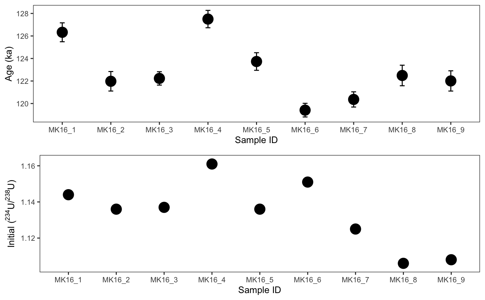

csUTh.RdcsUTh calculates closed-system Th-230/U ages, including detrital correction.
csUTh(input_data, nbitchoice = 100, detcorrectionchoice = TRUE, R28det = 0.8, R28det_err = 0.08, R08det = 1, R08det_err = 0.05, R48det = 1, R48det_err = 0.02, keepfiltereddata = FALSE, print_summary = TRUE, with_plots = TRUE)
| input_data | Input data frame, containing only rows of data for the sample that you want to solve. The following columns need to be present in this data frame: U234_U238_CORR, U234_U238_CORR_Int2SE, Th230_U238_CORR, Th230_U238_CORR_Int2SE, Th232_U238_CORR, Th232_U238_CORR_Int2SE. |
|---|---|
| nbitchoice | Number of iterations in the model. Recommended to have at least 100. Default: 100. |
| detcorrectionchoice | Do a detrital correction? Enter TRUE for yes, or FALSE for no. Default: TRUE |
| R28det | default is 0.8 |
| R28det_err | default is 0.08 |
| R08det | default is 1 |
| R08det_err | default is 0.05 |
| R48det | default is 1 |
| R48det_err | default is 0.02 |
| keepfiltereddata | Save filtered data on which an outlier test was performed? Only recommended if all analyses of a same sample are supposed to give the same age. Enter TRUE for yes, or FALSE for no. Default: FALSE |
| print_summary | Print a summary of the output to the console? Default is TRUE |
| with_plots | Draw plots? Default is TRUE |
data("iolite_export") # Only solve for sample MK16 output <- csUTh(iolite_export[grepl('MK16', iolite_export$X), ], nbitchoice = 100, detcorrectionchoice = TRUE, keepfiltereddata = FALSE, print_summary = TRUE)